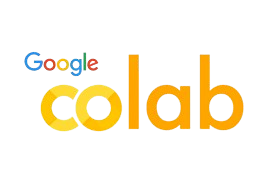

MY PORTFOLIO

SANJAY SRIRAM R
FRONT - END DEVELOPER
🎓A Student at KIT - Kalaignarkarunanidhi Institute of Technology, Coimbatore
🔖B.Tech - Artificial Intelligence and Data Science
🕝2023 - Present
Professional Summary
Hi, I'm Sanjay Sriram R, a third-year undergraduate student at KIT - Kalaignarkarunanidhi Institute of Technology, majoring in Artificial Intelligence and Data Science. Over the past few months, I’ve gained a solid foundation in core areas such as machine learning, data analytics, statistics. I’m proficient in tools and languages like Python, SQL, Scikit-learn, Pandas, and have hands-on experience working with datasets through academic projects and mini-internships.
Beyond academics, I'm actively involved in Coding platforms like Codechef,Leetcode,etc. and also participated in the 24-hr Hackathon, 12-hr Hackathon, 3-hr Hackathons, which allows me to collaborate with like-minded peers, participate in hackathons, and stay updated with the latest industry trends. I’ve also attended various workshops and online certifications to deepen my understanding of AI and its practical applications in sectors like healthcare, finance, and cyber security.Thank you for taking the time to learn a bit about me!
Skills
Programming Languages: |
Tools: .png) |
DSADBMSOOPSData Science |
Projects
Credit Card Fraud Detection
This project builds a machine learning model to detect fraudulent credit card transactions byanalyzing historical data and identifying suspicious patterns.
View my project:-Movie Rating Project using HTML
This project is about listing the top rated movies by IMDb, and also the short description of the listed movies.
View my project:-Birthday Invitation Project using HTML
This project builds a simple birthday invitation mentioning the stuffs available in the event and also with location's link using HTML.
View my project:-College Admission Application using HTML
This prject builds a college admission application and also mentioned with different fields of study available using HTML.
View my project:-Resume using HTML & CSS
This Project builds a simple Resume of myself which is done using HTML & some font-related styles using CSS.
View my project:-Certifications
NPTEL Certificates
➡️ Soft Skill Development
➡️ Design Thinking - A Primer
Online Certificates
INFOSYS SPRINGBOARD
➡️ Foundations of Python
➡️ Foundations of Java
➡️ Programming Fundamentals using Python
COURSERA
➡️ Foundations of Data Structures and Algorithms
➡️ Introduction to Artificial Intelligence
➡️ Data visualization with Python
➡️ Foundations os Data Science
➡️ Advanced linear models for Data Science, And so on...
ALTAIR ONE
➡️ Data Engineering Master Certification
➡️ Machine Learning Master certification
➡️ Platform Administration Master Certification
External Certificates
➡️ Achieved First prize in Paper Presentation at SRIET - Coimbatore
➡️ Achieved First prize in Ideathon at CIET - Coimbatore
Contact Me!
☎️ +91 9150992211
📧 sriramsanjay01@gmail.com
📍 Coimbatore, Tamil Nadu
LinkedIn: Sanjay Sriram R
Github: sanjaysriram-10